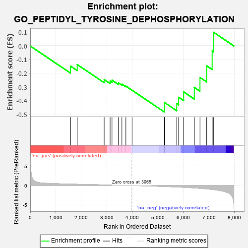
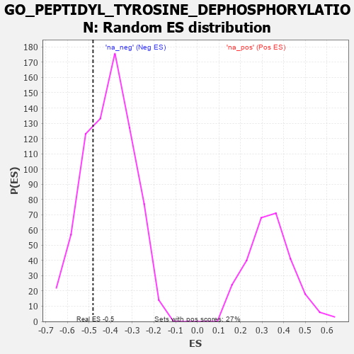

| | | Dataset | 7d |
| Phenotype | NoPhenotypeAvailable |
| Upregulated in class | na_neg |
| GeneSet | GO_PEPTIDYL_TYROSINE_DEPHOSPHORYLATION |
| Enrichment Score (ES) | -0.48171026 |
| Normalized Enrichment Score (NES) | -1.1735336 |
| Nominal p-value | 0.27846366 |
| FDR q-value | 0.6632691 |
| FWER p-Value | 1.0 |
Table: GSEA Results Summary

Fig 1: Enrichment plot: GO_PEPTIDYL_TYROSINE_DEPHOSPHORYLATION
Profile of the Running ES Score & Positions of GeneSet Members on the Rank Ordered List
| PROBE | GENE SYMBOL | GENE_TITLE | RANK IN GENE LIST | RANK METRIC SCORE | RUNNING ES | CORE ENRICHMENT | | 1 | PTPRT | | | 1578 | 0.378 | -0.1474 | No |
| 2 | PTPRQ | | | 1839 | 0.330 | -0.1356 | No |
| 3 | MTM1 | | | 2893 | 0.168 | -0.2453 | No |
| 4 | MTMR2 | | | 3126 | 0.133 | -0.2565 | No |
| 5 | MTMR8 | | | 3200 | 0.122 | -0.2492 | No |
| 6 | PTPRK | | | 3454 | 0.084 | -0.2697 | No |
| 7 | TNS2 | | | 3588 | 0.062 | -0.2781 | No |
| 8 | HACD2 | | | 3744 | 0.035 | -0.2928 | No |
| 9 | EYA1 | | | 3987 | -0.006 | -0.3225 | No |
| 10 | SSH1 | | | 5254 | -0.258 | -0.4469 | Yes |
| 11 | PTEN | | | 5262 | -0.261 | -0.4126 | Yes |
| 12 | TPTE2 | | | 5736 | -0.388 | -0.4197 | Yes |
| 13 | MTMR3 | | | 5809 | -0.408 | -0.3737 | Yes |
| 14 | PTPRN | | | 6007 | -0.474 | -0.3345 | Yes |
| 15 | PTPRD | | | 6423 | -0.629 | -0.3017 | Yes |
| 16 | PTPRS | | | 6646 | -0.738 | -0.2300 | Yes |
| 17 | PTPRF | | | 6908 | -0.872 | -0.1452 | Yes |
| 18 | PTPRB | | | 7122 | -1.010 | -0.0357 | Yes |
| 19 | PTPRJ | | | 7180 | -1.054 | 0.0995 | Yes |
Table: GSEA details [plain text format]

Fig 2: GO_PEPTIDYL_TYROSINE_DEPHOSPHORYLATION: Random ES distribution
Gene set null distribution of ES for GO_PEPTIDYL_TYROSINE_DEPHOSPHORYLATION